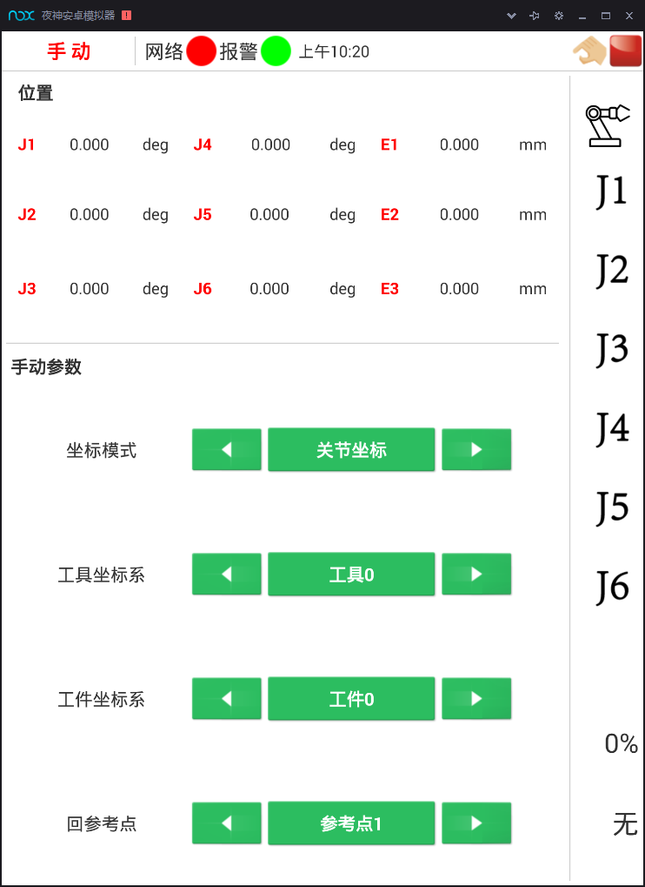
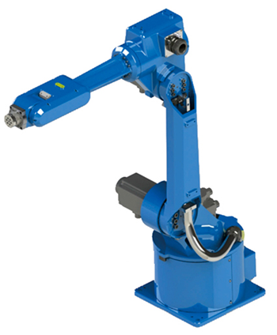

1.2手动操作工业机器人
1.2.1 手动操作功能简介
[知识准备]
机器人的运动可以是连续的、也可以是步进的，可以是单轴独立的、也可以是多轴联动的，这些运动都可以通过示教器手动操作来实现。如图1-15所示，手动操作界面是机器人控制统的主窗口界面，主要用于显示和设置当前组号、运行模式、坐标系等，用户可以在此界面中查看当前的状态信息，并进行设置。

图1-15 手动运行界面
此界面分为两部分，上半部分用于显示坐标位置和控制轴的运转，通过点动模式控制机器人运转。下半部分用于显示关键信息，点击相应按钮，即可对指定的信息进行设置和操作。
图1-16所示是关节坐标系的参考点位置，机器人在该点设有参考点刻度标识，用于机器人关节轴校准。HSR-612工业机器人控制系统定义在该位置下J1～J6角度依次为0,90,0,0，-90,0。

图 1-16 HSR-612工业机器人参考点位置
视频 1-2 机器人回零